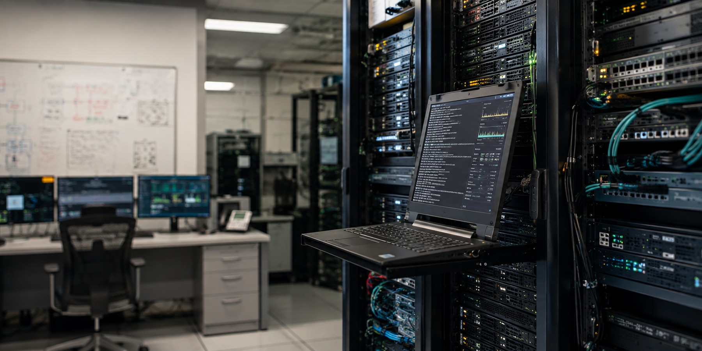
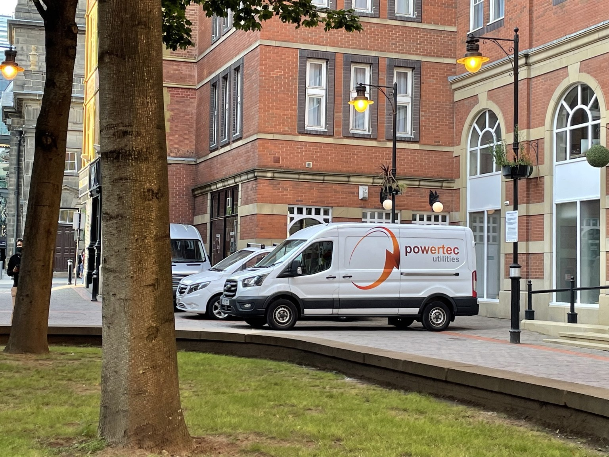

⬡
HV Operational Control
Safe operational management of HV systems through construction, commissioning, energisation, operation and handover.
EXPLORE →POWERTEC UTILITIES
Powertec Utilities supports the safe construction, commissioning, energisation and operation of complex electrical infrastructure across the UK and Europe.
Our experience spans electricity distribution, major infrastructure and European mission-critical data-centre environments — combining utility-grade operational discipline with the pace and resilience requirements of modern critical-power projects.
CORE CAPABILITIES
We support project teams where electrical safety, programme delivery and system availability must coexist.
Safe operational management of HV systems through construction, commissioning, energisation, operation and handover.
EXPLORE →Switching, isolation, earthing, safety documentation, network access and electrical safety governance.
EXPLORE →Structured operational support for testing, progressive energisation, integrated commissioning and handover.
EXPLORE →Control of electrical risk, work boundaries, safety documentation, permit holders and commissioning interfaces.
EXPLORE →FROM NETWORKS TO MISSION-CRITICAL
Powertec's experience has evolved from UK electricity distribution into demanding European data-centre commissioning environments. That combination brings together disciplined operational control, electrical safety and practical project delivery.
VIEW SECTORS
WHY POWERTEC
Powertec's capability has been developed across electricity distribution, HV project delivery and mission-critical commissioning. That breadth allows us to understand not only the immediate task, but also the wider operational consequences of every switching, isolation, testing and energisation decision.
Experience developed across multiple UK DNO environments, including network operations, asset replacement, fault restoration, commissioning and operational control.
Current European data-centre experience supporting electrical testing, commissioning, progressive energisation, safe systems of work and operational handover.
Commercial and operational capability demonstrated through the successful mobilisation and management of a HV asset-replacement programme.

POWERTEC IN PRACTICE
Powertec's work is grounded in practical High Voltage operations, commissioning, project delivery and electrical safety. Our experience has developed in live utility networks and now extends into complex European mission-critical infrastructure.
That combination enables us to understand both the engineering detail and the operational responsibility required to move systems safely from construction through commissioning, energisation and handover.
VIEW PROJECT EXPERIENCE